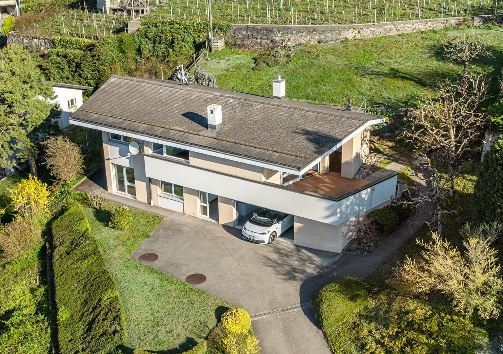
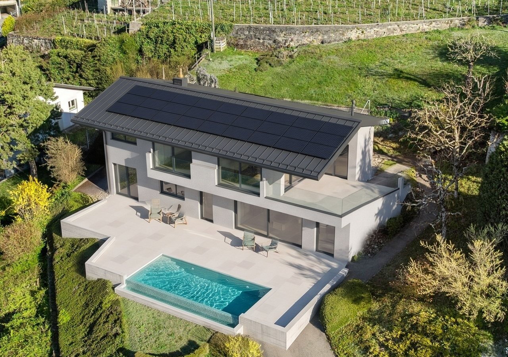
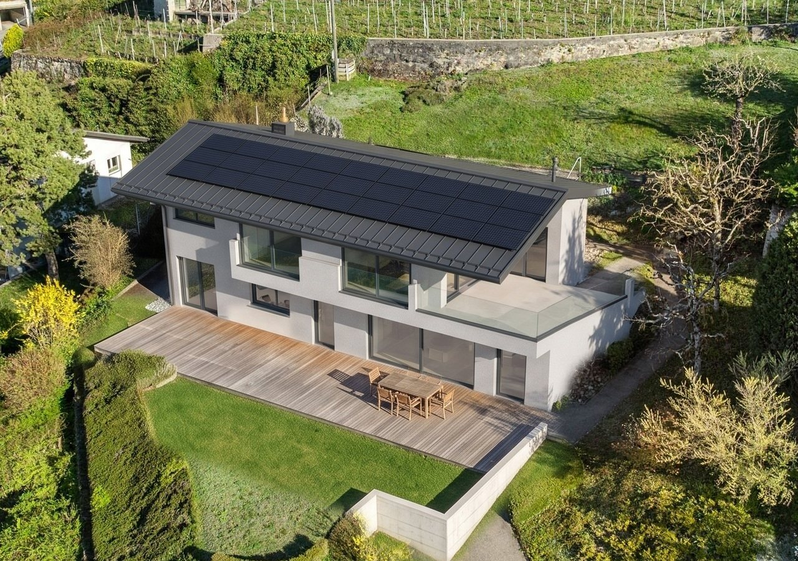
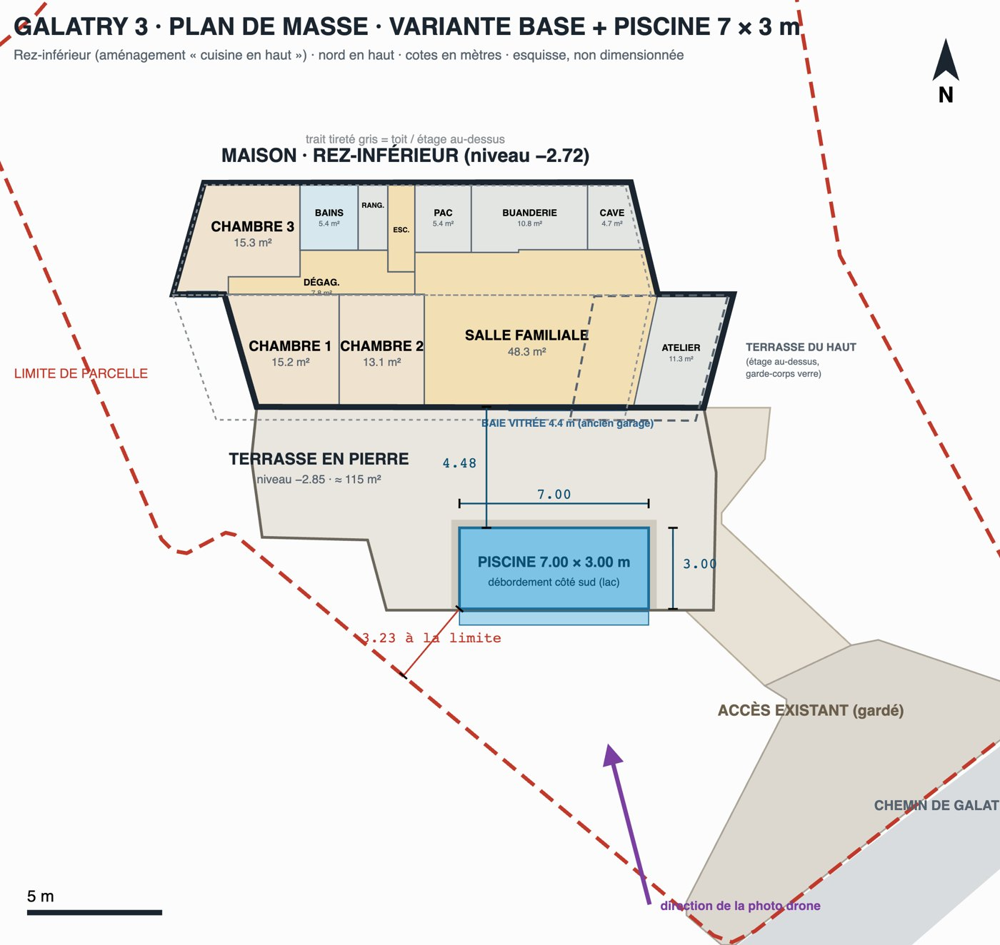

The listing’s drone photo, before and after the renovation of the realistic variant (base). Drag the slider to compare. Two garden layouts: with the 7 × 3 m pool, or without a pool, with a timber deck and lawn.
Base + pool
Stone-paved terrace, 7 × 3 m infinity pool


BeforeAfter↔
Insulated rendered façades, new metal roof with solar panels, two floor-to-ceiling French doors upstairs behind glass guards, glazing in place of the garage door. In front, the 115 m² terrace at −2.85 and the pool, parallel to the façade, 4.5 m from it and 3.2 m from the boundary. Low retaining walls (30 to 60 cm).
Base · timber and lawn
No pool: timber deck along the house, lawn in front

BeforeAfter↔
The same house. On the platform, a timber deck about 4.5 m deep along the façade, then lawn at the same level up to the low walls. The pool can be added later in place of the lawn.
Site plan
Base + 7 × 3 m pool, north up

Lower floor (“kitchen upstairs” layout), terrace, dimensioned pool, parcel boundary and the direction of the drone photo. Sketch, not to scale.
How these images are made
The drone camera is solved from 14 points of the house on the photo (roof corners, chimneys, band, openings): about 10 pixels of error on 2560.
The project’s 3D model is rendered in Blender from that camera and set into the photo: the geometry (terrace, pool, openings) comes from the plans.
An image-editing AI (Gemini) only makes the materials and light realistic, inside the changed area. The rest is the original photo.
These are illustrations, not plans. Proportions come from the sketch (matched to about 20–30 cm). Colours, materials, furniture and visible interiors are assumptions or were added by the AI.